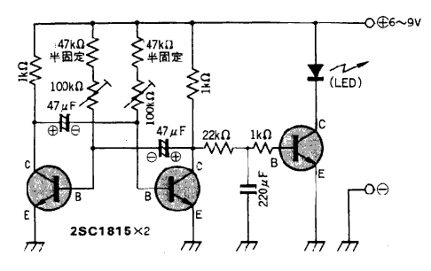

|
|
|
|
第1図にホタルモドキの回路図を示します。 Q1とQ2でマルチバィブレータという回路を構成しています。 これは一種の発振回路で、電源が入る とQ1とQ2が交互にオンとなるというものです。 図の中のA点とB点の電庄の変化を第2図に示します。
|
|
|
|
この出カでLEDを光らせると「踏切信号」にはなりますが「ホタルの光」にはなりません。 ホタルはもっとゆっくり明るくなり、ゆっくり消えてい
きますね。 これを演出するのが、R5とR6，C3で構成される積分回路です。
その波形を第2図にあわせて示します。Q3はLEDを光らせるためのアンブです。 回路はこんな具合に非常に簡単な物ですから製作上、特に難しい事もな
いと思いますが、第3図を参考にして作り上げてください。 回路ができあがったら、電池と共に適当なプラスチックの箱に入れてください。
でき上がったぱかりのホタルモドキを、ホタルの飛んでいる所に持っていっても、ホタルが簡単に集まってくれることはまずありません。 君がホタル と話をしようと思ったらまず最初に君自身がホタルにならなけれぱならないのです。
(1)まず気持ちをリラックスさせてくだざい。 フワーッ，フワーッという感じで体を右に左に動かしてみてください。
(2)LEDを回路から一度外して、間に細いウレン線を間に入れて釣竿の先に固定します。 これを持って(1)の時の気持ちになってLEDを振り 回してください。 だんだんとホタルの気分になってきましたね。 予備訓練はこのくらいでよいでしょう。
(3)ホタルの飛んでいる所を捜してください。 一時いなくなったホタルですが、環境が少ししずつ良くなっているのでしょうか、最近また増えてき ました。
(4)ホタルの飛ぴ方をよーく観察してくだざい。 どんな所にいるか。 どういう飛ぴ方をするか。 どの様に2頭（匹）のホタルが出会うか。 君 はホタルになったつもりでよく観蔡するのです。
(5)できれぱホタル見物の人がいないときに実験を開始したいのですが、それがダメならなるべく隅の方で、近くにいる人達に「生物の実験をさせて ください」とお断りをしてから実験を始めましょう。
(6)新米のホタル(ホタルモドキ)はやっぱり本物のホタルとは何処か違うのでしょう、始めのうちはなかなか相手にしてもらえないと思います。君 はただひたすらホタルになるのです。
(7)アッ向こうからホタルモドキめがけてl頭のホタルが飛んできました。君はドキドキしています。 でも、あとちょっとというときにホタルは スーッとUターンしてしまいました。 惜しかったですね。
(8)ホタルが飛んできて、ちょうどホタルモドキの所に止まろうとしたときに、ホタルモドキの灯が消えてしまうと、ホタルは「振られた」と思いU ターンしてしまうようです。 こんな場合は、ホタルモドキの振り回し方を工夫して、LEDがちょうど点灯した時にホタルと出会うように釣竿を動かしてみて ください。
(9)かなり遠くからホタルモドキめがけて一直線に飛んでくるホタルがいます。ホタルモドキの1メートルぐらい手前で、高輝度のLEDが光るよう
に明るく光ることがあります。これをフラッシングといいます。
うまくいくとこのあと、ホタルは君のホタルモドキにしがみついてくれるかも知れません。
(10)ホタルは頭の上とか、後ろの方からとか、思ってもみなかったようなところから突然現れて，ホタルモドキにしがみつくこともあります。
(11)本物のホタルにしがみつかれて、たぶん君はどうしたら良いかドキドキしてしまったことでしょう。
(12)釣竿の先をそおーっと手元に持ってきて、懐中電灯でよく観察して見ましょう。 ホタルモドキにしがみついたホタルは、少しぐらいのことで は驚きません。 落ち着いて観察出来るはずです。
(13)l分くらいするとホタルは飛んでいってしまいます。
(14)飛んできたホタルがオスだったのかメスだったのか、「ゲンジボタル」だったのか「へイケボタル」だったのかという生物的な興味は、理科部 の生物班の人たちと共同研究するとおもしろいと思います。
(15)ゲンジボタルは束日本では4秒，西日本では2秒ごとの間隔で光ったり消えたりするようです。 それでは中部地方ではどうでしょうか？ こ れも生物班の人達と共同研究すると面白いと思います。
(16)東日本は4秒間隔といいますが、3.5秒とか4．5秒では反応しないものなのでしょうか。 いろいろと研究課題がありますね。
(17)ホタルは現在の日本では貴重な生き物です。「掴まえて家に持って帰ろう」なんてことは考えないでくだざいね、
このホタルモドキは約3．5秒ごとに光ります。 この光る時間は、R2、R3、C1、C2の値を変化させることで調節できます。
R、C共にその値を大きくすると点滅の時間が長くなります。
Rの値をボリウムで連続的に変化できるようにしてみるのもおもしろそうですね。この場合、抵抗の価はあまり小さくするわけにはいきませんからシリーズに
47kΩの抵抗を入れておいてください（第4図）。
|  |
|
|
コンデンサの価は自由度が広いので安心して価を替えて実験してみてください。
Q1とQ2は対照的な回路になっています。 従ってQ1の のコレクタ側からもう一頭のホタルを作る事が出来ます。 回路としては第１図のR5から右側と同じものをQ２のコレクタに接続してください。
ケースに入れる場合はFCZ基板の裏側にはってある両面接着テープを使いケースに張り付けてください。 また、第5図のようにLED用のプラグを 利用してスイッチとする事も出来ます。 この場合のイヤホンジャックはステレオ用としてください。 この場合Q3 の回路がコレクタ接地になりますが、動作に支障はおこりません。
|
|
|
|
このイヤホンプラグを利用したスイッチ回路はいろいろな回路に応用する事ができます。
今からホタルモドキを作って置けば夏休みの宿題はバッチリOKです。
(1)適当な大きさの段ボール箱に覗き穴をくり抜きます。
(2)この箱の中に水辺の草を植えた植木鉢をならべ、その中にホタルモドキを放ちます。
(3)覗き穴から覗けばホタル見物が出来ます。
(4)君の学年によってホタルの数を増やしたり、ホタルを動かしたり、段ボール箱の中側に背景を書いたり、と変化をつけてください。
(5)紙粘土等でホタルの模型を作るのも面白いと思います。
(6)プランター等で草むらをつくり、ホタルモドキを沢山その中にはなすと面白いディスプレイになります。 学校の文化祭の催しものに面白いと思 います。
(7)ホタルと楽しい交信ができた人は研究レポートを出しましょう。 また、FCZ研究所にもメールでレポート送ってください。
|
|
{kind=link}